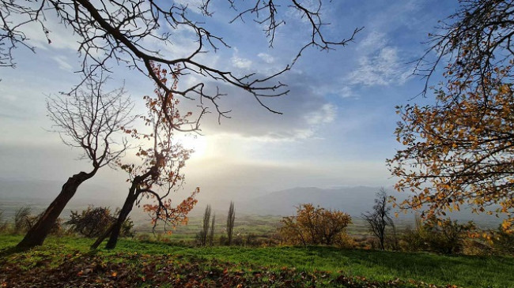
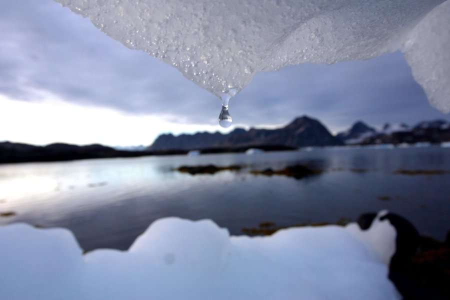
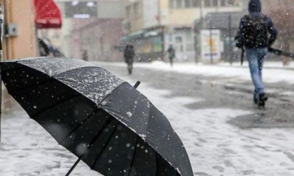

Mot i vranët dhe me diell, në viset malore të Kosovës mundësi për borë
Mot i qëndrueshëm deri në fundjavë, me vranësira e diell. Në viset malore kryesisht në Rugovë mundësi për reshje bore. ... Sot do të mbajë mot i ftohtë, me vranësira dhe intervale me diell. Temperaturat e ajrit gjatë ditës së sotme do të luhatën nga 1 deri në 8 °C. Dita e shtunë do të jetë me mot pjesërisht me re, pasdite pothuajse i kthjellët, në mbrëmje me mjegull. Temperaturat parashihet të lëvizin prej 5 deri në 12 °C. E diela do të mbajë mot pjesërisht me re e me diell. Temperaturat parashihet të lëvizin prej 0 deri në 13 °C.
Ngrohja globale në pikën kulmuese

Emetimet e karbonit, acidifikimi i oqeanit, shkatërrimi i Amazonës po gjenerojnë shifra të reja shqetësuese
Një studim i ri që ka trajtuar shenjat jetësore të planetit ka zbuluar se shumica e treguesve kyç të krizës klimatike globale po përkeqësohen dhe se ose po u afrohen ose po i tejkalojnë pikat kyç, ngase Toka po nxehet fort. ... Në përgjithësi, studimi ka zbuluar se 16 prej 31 sinjaleve jetësore të planetit, të cilat janë vrojtuar, përfshirë përqendrimet e gazeve serrë, përmbajtja e nxehtësisë së oqeanit dhe masës së akullit, kanë rezultuar me shifra shqetësuese, ka shkruar të enjten e përditshmja britanike “The Guardian”. Autorët e kanë theksuar njashtu nevojën për një ndalim të përkohshëm të lëndëve djegëse fosile dhe zhvillimin e rezervave globale strategjike të klimës për t’i mbrojtur dhe rivendosur zhytjet natyrore të karbonit dhe biodiversitetin. Arsimimi klimatik duhet që po ashtu të jetë pjesë e kurrikulave shkollore në të gjithë globin, kanë bërë të ditur studiuesit.
Metereologu Rugova tregon se kur mund të bie borë në Kosovë
Sipas Rugovës, ditët e fundit të muajit nëntor dhe në dhjetor mund të ketë të reshura të borës. “Patjetër që ditët e fundit të nëntorit dhe dhjetorit sjellin mundësitë për të reshurat e borës, e me këtë shtohet edhe intetesimi se kur mund të kemi reshjet e para të dëborës”, tha Rugova të dielen për Express. ... Rugova thekson se gjatë kësaj jave nuk pritet të ketë reshje bore, por vetëm të shiut. “Sipas zhvillimeve të fundit të situatës sinoptike as gjatë kësaj jave nuk priten mundësi për reshje bore. Gjatë kësaj jave pritet të kemi periudha me të reshura, por të shiut, ngase temperaturat ende do të jenë të larta. Vetëm në vise të larta malore janë gjasat për bore”, tha ai. “Për momentin, mundësitë janë nga ditët e para të dhjetorit, kur edhe trendi i temperaturave është në rënie. Mirëpo në distancë kohore ende është pak larg, për të qenë parashikimet e besueshme”, përfundoi ai.